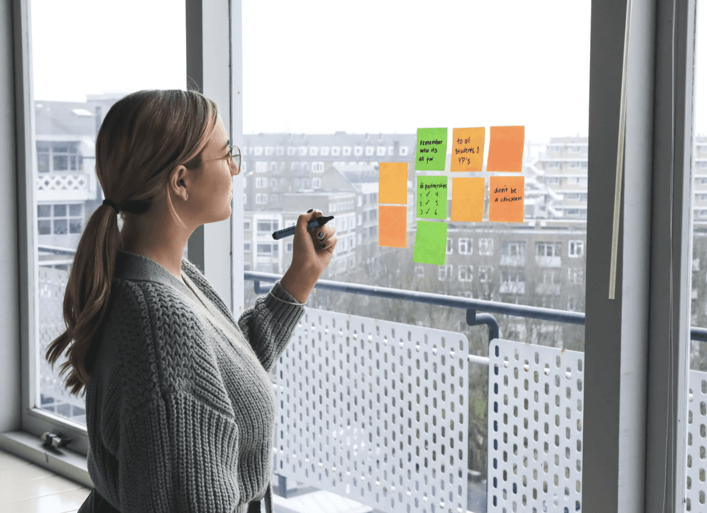

»Vodenje lastnega podjetja je hitro postalo preveč razpršeno. S Teo sem začela razmišljati širše in z več jasnosti sprejemati podjetniške odločitve.«Saraustanoviteljica marketing studia
Storitev
Karierni in poslovni coaching
Karierni in poslovni coaching ti pomaga razjasniti smer, okrepiti samozavest pri odločanju in graditi vlogo, ki je skladna s tvojimi vrednotami.

Ko se znajdeš na točki spremembe, ne potrebuješ še enega nasveta - potrebuješ jasnost.
Coaching je namenjen posameznikom, ki razmišljajo o naslednjem koraku: vrnitev na delo, menjava službe, nova vloga ali drugačen način vodenja kariere.
Coaching ti ponudi strukturiran in zaupen prostor, kjer lahko razmisliš širše. O svojih vrednotah, ambicijah in realnih možnostih. Ne iščeš idealne rešitve, ampak smer, ki je skladna s tabo.
Srečanja trajajo 60 minut in potekajo online. Proces temelji na profesionalnih standardih, zaupnosti in spoštovanju tvojega tempa.
Prehodi prinesejo vprašanja:
- Kje sem danes?
- Kaj mi je v tej fazi res pomembno?
- Kakšno vlogo želim graditi?
Kaj pridobiš
Kaj pridobiš
Raziščeš svoje vrednote, okrepiš zavedanje in ustvariš kariero v ravnovesju s sabo.
Jasnost smeri
Razumeš, kaj ti je v tej fazi kariere in življenja zares pomembno.
Samozavest pri odločitvah
Odločitve sprejemaš z več notranje gotovosti in manj dvoma.
Zrel premik
Ne ostaneš v razmišljanju, temveč narediš premišljen korak naprej.
Zaupanje strank
Kaj pravijo stranke
Vsak pogovor prinese drugačno zgodbo - od večje jasnosti in samozavesti, do konkretnih premikov v življenju.
»Kot vodja ekipe sem bila pogosto ujeta med rezultate in ljudi. S coachingom sem postala mirnejša v zahtevnih situacijah in jasnejša v komunikaciji.«Petravodja ekipe v bančnem sektorju
»V poslu sem dolgo dvomil vase, čeprav sem bil strokovno samozavesten. Coaching mi je dal strateško jasnost in pogum za pomembne odločitve.«Lukaosebni trener
»Navajena sem biti ves čas ‘vidna’, redko pa sem si dovolila prostor za razmislek. Naučila sem se postaviti jasnejše meje in začela ustvarjati z več notranjega miru.«Majainfluencerka